Chapter 10 Data Analysis
Although the data-science workflow suggests a clear separation between data manipulation and data analysis, in practice such separation is not that obvious. Indeed, most analyses require data manipulation. In fact, some data transformation can be seen as a part of both data transformation and data analysis. Yet, this Section is somewhat more dedicated to the analysis of data, by 1) presenting how some of the most common analyses in sensory and consumer reserach are performed, 2) integrating the analysis part to your script, and most importantly 3) providing applications and alternatives or extension to all the procedures presented in 4 and in 5. With that in mind, the emphasis is not on the results and interpretation of the results, but on the path to get such results. For practical reasons, this chapter is divided in 3 sub-sections, one dedicated to the sensory data, one to the consumer data, and one combining both.
10.1 Sensory Data
As one may expect, this chapter is mostly built around the {tidyverse}:
library(tidyverse)
library(here)
library(readxl)Let’s start with the analysis of our sensory data stored in biscuits_sensory_profile.xlsx.
file_path <- here("data", "biscuits_sensory_profile.xlsx")
p_info <- readxl::read_xlsx(file_path, sheet = "Product Info") %>%
dplyr::select(-Type)
sensory <- readxl::read_xlsx(file_path, sheet = "Data") %>%
inner_join(p_info, by = "Product") %>%
relocate(Protein:Fiber, .after = Product)Typically, sensory scientists first seek to determine whether there are differences between samples for the different attributes. This is done through Analysis of Variance (ANOVA) and can be done using the lm() or aov() functions.
Let’s start by running the ANOVA for the attribute Sweet. Since the test has not been duplicated, the 2-way ANOVA (including the Product and Assessor effects) without interaction is used. This is done using the following code:
sweet_aov <- lm(Sweet ~ Product + Judge, data = sensory)
anova(sweet_aov)## Analysis of Variance Table
##
## Response: Sweet
## Df Sum Sq Mean Sq F value Pr(>F)
## Product 10 2654 265 7.27 4.5e-08 ***
## Judge 8 4451 556 15.25 2.3e-13 ***
## Residuals 80 2918 36
## ---
## Signif. codes:
## 0 '***' 0.001 '**' 0.01 '*' 0.05 '.' 0.1 ' ' 1The results provided here by
anova()are not handy to manipulate as the output is not stored in a matrix or data frame. Instead, and as illustrated later, we apply thetidy()function from{broom}as it tidies the statistical outputs from most testing/modelling functions into a user-friendly tibble.
We could duplicate this code for each single attribute, but this would be quite tedious for large number of attributes. Moreover, this code is sensitive to the way the variables are named, and hence might not be suitable for other data sets. Instead, we propose two solutions, one using split() combined with map() and one involving nest_by() to run this analysis automatically.
For both these solutions, the data should be stored in the long and thin form, which can be obtained using pivot_longer():
senso_aov_data <- sensory %>%
pivot_longer(Shiny:Melting, names_to = "Attribute", values_to = "Score")From this structure, the first approach consists in splitting the data by attribute. Once done, we run the ANOVA for each subset (the model is then defined as Score ~ Product + Judge) automatically using map()44, and we extract the results of interest using the {broom} package.
Ultimately, the results can be combined again using enframe() and unnest().
senso_aov1 <- senso_aov_data %>%
split(.$Attribute) %>%
map(function(data) {
res <- broom::tidy(anova(lm(Score ~ Product + Judge, data = data)))
return(res)
}) %>%
enframe(name = "Attribute", value = "res") %>%
unnest(res)The second approach uses the advantage of tibbles and nests the analysis by attribute (meaning the analysis is done for each attribute separately, a bit like group_by()). In this case, we store the results of the ANOVA in a new variable called mod.
Once the analysis is done, we summarize the info stored in mod by converting it into a tibble using {broom}:
senso_aov2 <- senso_aov_data %>%
nest_by(Attribute) %>%
mutate(mod = list(lm(Score ~ Product + Judge, data = data))) %>%
summarise(broom::tidy(anova(mod))) %>%
ungroup()## `summarise()` has grouped output by 'Attribute'. You
## can override using the `.groups` argument.The two approaches return the exact same results:
## # A tibble: 96 × 7
## Attribute term df sumsq meansq stati…¹ p.value
## <chr> <chr> <int> <dbl> <dbl> <dbl> <dbl>
## 1 Astringe… Prod… 10 870. 87.0 1.62 1.16e- 1
## 2 Astringe… Judge 8 5041. 630. 11.7 6.94e-11
## 3 Astringe… Resi… 80 4302. 53.8 NA NA
## 4 Bitter Prod… 10 1005. 101. 3.95 2.11e- 4
## 5 Bitter Judge 8 2863. 358. 14.1 1.42e-12
## 6 Bitter Resi… 80 2034. 25.4 NA NA
## 7 Brittle Prod… 10 6246. 625. 11.0 1.42e-11
## 8 Brittle Judge 8 4243. 530. 9.38 4.86e- 9
## 9 Brittle Resi… 80 4525. 56.6 NA NA
## 10 Cereal f… Prod… 10 795. 79.5 1.22 2.94e- 1
## # … with 86 more rows, and abbreviated variable name
## # ¹statisticLet’s dig into the results by extracting the attributes that do not show significant differences at 5%. Since the tidy() function from {broom} tidies the data into a tibble, all the usual data transformation can be performed. Let’s filter only the Product effect under term, and let’s order the p.value decreasingly:
res_aov <- senso_aov1 %>%
filter(term == "Product") %>%
dplyr::select(Attribute, statistic, p.value) %>%
arrange(desc(p.value)) %>%
mutate(p.value = round(p.value, 3))res_aov %>%
filter(p.value >= 0.05)## # A tibble: 4 × 3
## Attribute statistic p.value
## <chr> <dbl> <dbl>
## 1 Cereal flavor 1.22 0.294
## 2 Roasted odor 1.40 0.193
## 3 Astringent 1.62 0.116
## 4 Sticky 1.67 0.101As can be seen, the products do not show any significant differences at 5% for 4 attributes: Cereal flavor (p=0.294), Roasted odor (p=0.193), Astringent (p=0.116), and Sticky (p=0.101).
Rather than showing the results in a table, let’s visualize them graphically as a bar-chart by representing the F-values. The attributes are ordered decreasingly, and colour-coded based on their significance:
res_aov %>%
mutate(Signif = ifelse(p.value <= 0.05, "Signif.", "Not Signif.")) %>%
mutate(Signif = factor(Signif, levels = c("Signif.", "Not Signif."))) %>%
ggplot(aes(x = reorder(Attribute, statistic), y = statistic, fill = Signif)) +
geom_bar(stat = "identity") +
scale_fill_manual(values = c("Signif." = "forestgreen", "Not Signif." = "orangered2")) +
ggtitle("Sensory Attributes", "(The attributes are sorted according to product-wise F-values)") +
theme_bw() +
xlab("") +
ylab("F-values") +
coord_flip()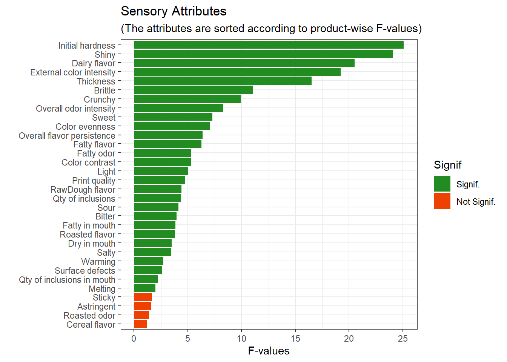
It appears that the evaluated biscuits differ the most (top 5) for Initial hardness, Shiny, Dairy flavor, External color intensity, and Thickness.
As an alternative, the
decat()function from the{SensoMineR}package would do the same job, as it automatically performs ANOVA on a set of attributes (presented in subsequent columns). Additionally, it also perform some t-tests that highlight which samples are significantly more (or less) intense than average for each attribute.
Once the significant differences have been checked, a follow-up analysis consists in visualizing these differences in a multivariate way. Such visualization is often done through Principal Component Analysis (PCA). In practice, PCA is performed on the sensory profiles. Let’s start with building such table:
senso_mean <- sensory %>%
pivot_longer(Shiny:Melting, names_to = "Attribute", values_to = "Score") %>%
dplyr::select(-Judge) %>%
pivot_wider(names_from = Attribute, values_from = Score, values_fn = mean)Such table is then submitted to PCA. R proposes many solutions to run such analysis, including the prcomp() and princomp() functions from the {stats} package. However, we prefer to use PCA() from the {FactoMineR} as it is more complete as it proposes many options that are very useful in sensory and consumer research (e.g. it generates the graphics automatically, and allows projecting supplementary individuals and/or variables).
It should however be noted that the PCA() function does not accept tibbles. Instead, the table should be stored in a matrix or data frame which contain the individuals’ names (here the product names) as row names. Fortunately, there is an easy solution that allows converting a tibble into a data frame (as.data.frame()) and passing the Product column into row names (column_to_rownames(var="Product")).
Since the data also contain two qualitative variables in Protein and Fiber, they should either be removed prior to running the analysis, or better be projected as supplementary through the quali.sup parameter from PCA(). Finally, since POpt is an optimized product, let’s not include it in the analysis per se (it is not contributing to the construction of the dimensions). Instead we project it as supplementary (through ind.sup) to illustrate where it would be located on the space if it were.
library(FactoMineR)
senso_pca <- senso_mean %>%
arrange(Product) %>%
as.data.frame() %>%
column_to_rownames(var = "Product") %>%
PCA(., ind.sup = nrow(.), quali.sup = 1:2, graph = FALSE)Since we set the option graph=FALSE, the PCA plots are not yet being generated. Although PCA() can generate the plots either in {base} R language, or in {ggplot2}, we prefer to use a complementary package called {factoextra} which re-creates most plots from {FactoMineR} (and some other packages) as a ggplot() object. This comes in very handy as you can benefit from the flexibility offered by ggplot().
The score map (the product map) from PCA() is created trough fviz_pca_ind(), whereas the variables’ representation is created with fviz_pca_var(). fviz_pca_biplot() is used to produce the so-called biplot.
To illustrate this, let’s reproduce the product map by coloring the products using the supplementary variables (Protein and Fiber content). This can easily be done through the habillage parameter from fviz_pca_ind(), which can either take a numerical value (position) of the name of the qualitative variable.
library(factoextra)
fviz_pca_ind(senso_pca, habillage = "Protein", repel = TRUE)
fviz_pca_ind(senso_pca, habillage = 2, repel = TRUE)
fviz_pca_var(senso_pca)
fviz_pca_biplot(senso_pca)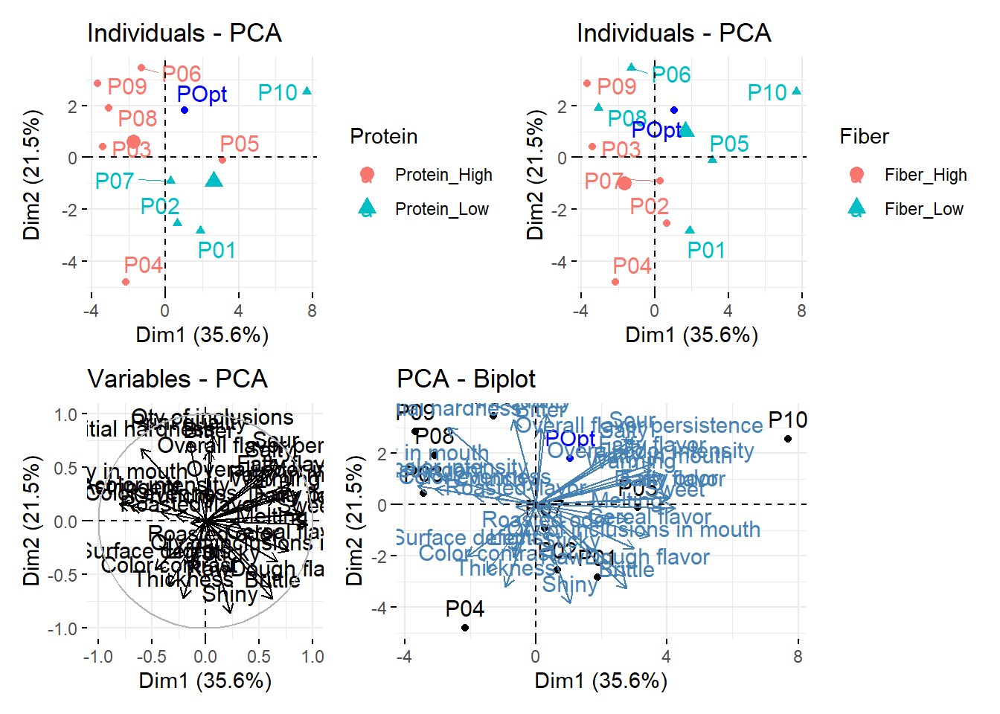
Here, repel=TRUE uses geom_text_repel() from {ggrepel} (rather than geom_text() from {ggplot2}) to avoid having labels overlapping.
On the first dimension, P10 is opposed to P09 and P03 as it is more intense for attributes such as Sweet, and Dairy flavor for example, and less intense for attributes such as Dry in mouth and External color intensity. On the second dimension, P08and P06 are opposed to P02 and P07 as they score higher for Qty of inclusions, and Initial hardness, and score lower for RawDough flavor and Shiny. POpt is located between P05 and P06.
Many more visualizations can be produced. Amongst others, let’s mention: * Scree plot showing the evolution of the eigenvalues across dimensions to help decide how many dimensions to consider; * The representation of the product space on other dimensions (by default, dimension 1 and dimension 2 are shown); * Representations of the (product or attribute) space in which the contribution or quality of representation of the elements are showcased.
For more information regarding the various options offered by {factoextra}, see (REF BOOK {factoextra}).
10.2 Demographic and Questionnaire Data
The biscuits_traits.xlsx file contains descriptive (i.e. demographic) information regarding the consumers and their food-related behavioral traits (i.e. psychometric TFEQ data, see Section 7 for more information). This file has three tabs denoted as Data, Variables, and Levels:
- Data contains the data, which is coded;
- Variables provides information (e.g. name, information) related to the different variables present in Data;
- Levels provides information about the different levels each variable can take.
Let’s start with importing this data set. The importation is done in multiple steps as following:
file_path <- here("Data", "biscuits_traits.xlsx")
excel_sheets(file_path)## [1] "Data" "Variables" "Levels"demo_var <- read_xlsx(file_path, sheet = "Variables") %>%
dplyr::select(Code, Name)
demo_lev <- read_xlsx(file_path, sheet = "Levels") %>%
dplyr::select(Question, Code, Levels) %>%
inner_join(demo_var, by = c("Question" = "Code")) %>%
dplyr::select(-Question)
demographic <- read_xlsx(file_path, sheet = "Data", skip = 1, col_names = unlist(demo_var$Name))10.2.1 Demographic Data: Frequency and Proportion
For this demographic data file, let’s start by having a look at the partition of consumers for each of the descriptive variables. This is done by computing the frequency and proportion (in percentage) attached to each level of Living area, Housing, Income range, and Occupation. To obtain such a table, let’s start by selecting only the columns corresponding to these variables together with Judge.
Since data from surveys and questionnaires are often coded (here, answer #6 to question Q10 means Student, while answer #7 to the same question means Qualified worker), they first need to be decoded. In our case, the key to decode the data is stored in demo_lev.
Different strategies to decode the data are possible. One straight-forward strategy consists in automatically decoding each variable using mutate() and factor(). Another approach is considered here: Let’s start with building a long thin tibble with pivot_longer() that we merge to demo_lev by Question and Response using inner_join(). We prefer this solution here as it is simpler, faster, and independent of the number of variables to decode.
Once done, we can aggregate the results by Question and Levels (since we want to use the level information, not their code) and compute the frequency (n()) and the proportion (N/sum(N))45.
library(formattable)
demog_reduced <- demographic %>%
dplyr::select(Judge, `Living area`, Housing, `Income range`, `Occupation`) %>%
pivot_longer(-Judge, names_to = "Question", values_to = "Response") %>%
inner_join(demo_lev, by = c("Question" = "Name", "Response" = "Code")) %>%
group_by(Question, Levels) %>%
summarize(N = n()) %>%
mutate(Pct = percent(N / sum(N), digits = 1L)) %>%
ungroup()Histograms are a nice way to visualize proportions and to compare them over several variables. Such histograms can be obtained by splitting demog_reduced by Question and by creating them using either N or Pct (we are using Pct here). For simplicity, let’s order the levels decreasingly (reorder) and let’s represent them horizontally (coord_flip()). Of course, such graphs are automated across all questions using map():
demog_reduced %>%
split(.$Question) %>%
map(function(data) {
var <- data %>%
pull(Question) %>%
unique()
ggplot(data, aes(x = reorder(Levels, Pct), y = Pct, label = Pct)) +
geom_bar(stat = "identity", fill = "grey50") +
geom_text(aes(y = Pct / 2), colour = "white") +
xlab("") +
ylab("") +
ggtitle(var) +
theme_bw() +
coord_flip()
})## $Housing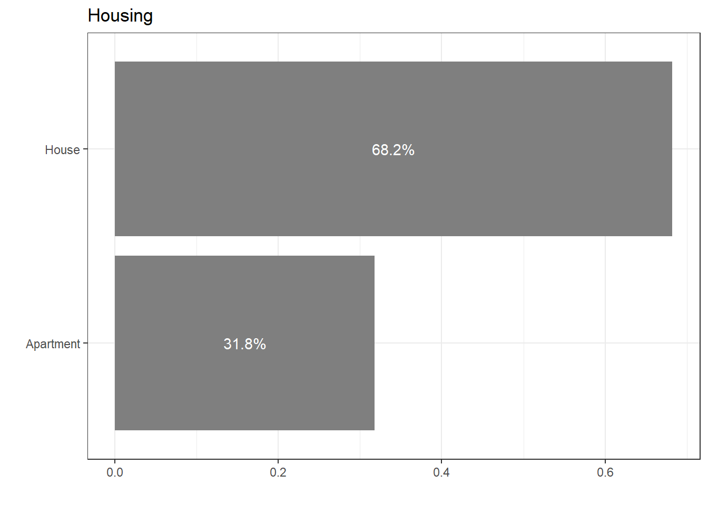
##
## $`Income range`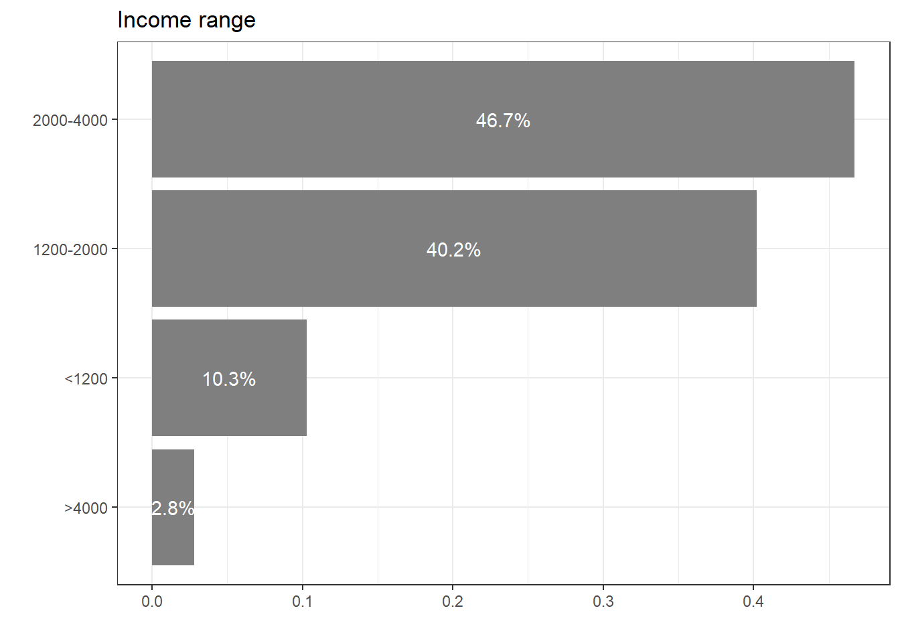
##
## $`Living area`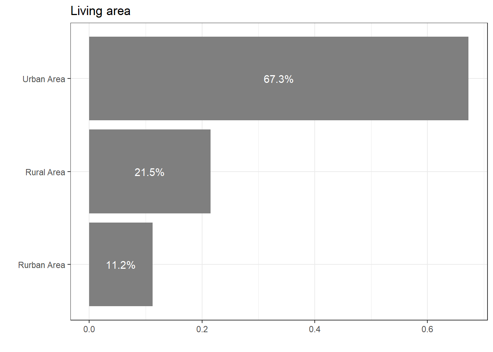
##
## $Occupation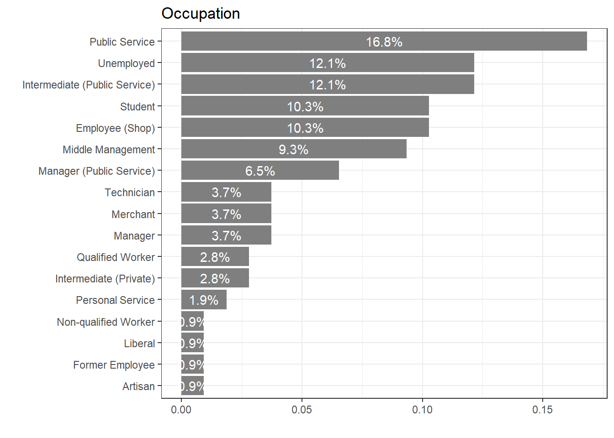
10.2.2 Eating behavior traits: TFEQ data
In the same data set, consumers also answered some questions that reflect their relation to food (Stunkard and Messick 1985). These questions can be categorized into three groups (also known as factors):
- Disinhibition (variables starting with
D); - Restriction (variables starting with
R); - Sensitivity to Hunger (variables starting with
H).
In order to analyze these three factors separately, we first need to select the corresponding variables. As we have seen earlier, such selection could be done by combining dplyr::select() to starts_with("D"), starts_with("R"), and/or starts_with("H"). However, this solution is not satisfactory as it also selects other variables that would start with any of these letters (e.g. Housing).
Instead, let’s take advantage of the fact that variable names have a recurring pattern (they all start with the letters D, R, or H, followed by a number) to introduce the notion of regular expressions.
Regular expressions are coded expression that allows finding patterns in names. In practice, generating a regular expression can be quite complex as it is an abstract concept which follows very specific rules. Fortunately, the package {RVerbalExpression} is a great assistant as it generates the regular expression for you thanks to understandable functions.
To create a regular expression using {RVerbalExpression}, we should first initiate it by calling the function rx() to which any relevant rules can be added. In our case, the variables must start with any of the letter R, D, or H, followed by a number (or more, as values go from 1 to 21). This can be done using the following code:
library(RVerbalExpressions)
rdh <- rx() %>%
rx_either_of(c("R", "D", "H")) %>%
rx_digit() %>%
rx_one_or_more()rdh is defined as (R|D|H) which corresponds to the regular expression we were looking for. We can then reduce (through dplyr::select()) the table to the variables that fit our regular expression by using the function matches().
demographic %>%
dplyr::select(matches(rdh))For each variable, let’s create a frequency table. Although we could use already build in functions, let’s customize our table (including raw frequency and percentages) as we want by creating our own function (called here myfreq()):
myfreq <- function(data, info) {
var <- unique(unlist(data$TFEQ))
info <- info %>%
filter(Name == var)
res <- data %>%
mutate(Response = factor(Response, levels = info$Code, labels = info$Levels)) %>%
arrange(Response) %>%
group_by(Response) %>%
summarize(N = n()) %>%
mutate(Pct = percent(N / sum(N), digits = 1L)) %>%
ungroup()
return(res)
}We then apply this function to each variable separately using map() after pivoting all these variables of interest (pivot_longer()) and splitting the data by TFEQ question:
TFEQ_freq <- demographic %>%
dplyr::select(Judge, matches(rdh)) %>%
pivot_longer(-Judge, names_to = "TFEQ", values_to = "Response") %>%
split(.$TFEQ) %>%
map(myfreq, info = demo_lev) %>%
enframe(name = "TFEQ", value = "res") %>%
unnest(res) %>%
mutate(TFEQ = factor(TFEQ, levels = unique(str_sort(.$TFEQ, numeric = TRUE)))) %>%
arrange(TFEQ)From this table, histograms representing the frequency distribution for each variable can be created. But let’s suppose that we only want to display variables related to Disinhibition. To do so, we first need to generate the corresponding regular expression (only selecting variables starting with “D”) to filter the results before creating the plots:
d <- rx() %>%
rx_find("D") %>%
rx_digit() %>%
rx_one_or_more()
TFEQ_freq %>%
filter(str_detect(TFEQ, d)) %>%
ggplot(aes(x = Response, y = Pct, label = Pct)) +
geom_bar(stat = "identity", fill = "grey50") +
geom_text(aes(y = Pct / 2), colour = "white") +
theme_bw() +
theme(axis.text = element_text(hjust = 1, angle = 30)) +
facet_wrap(~TFEQ, scales = "free")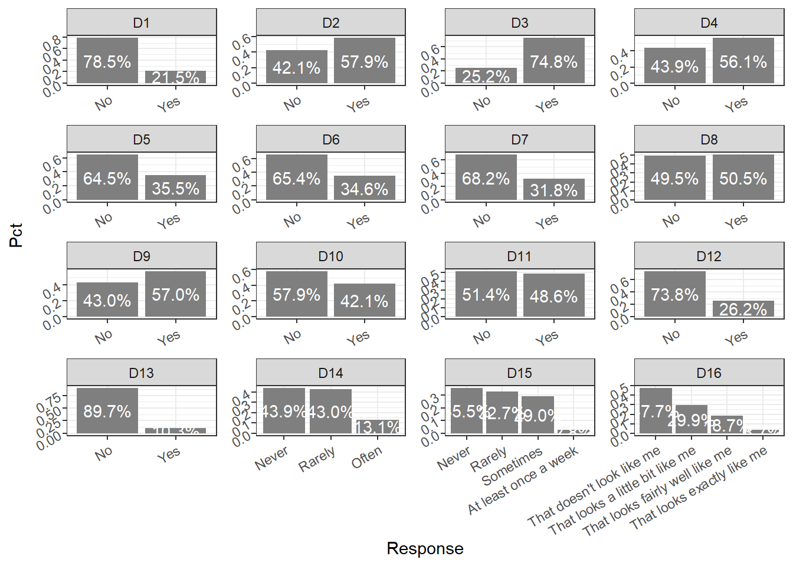
Structured questionnaires such as the TFEQ are very frequent in sensory and consumer science. They are used to measure individual patterns as diverse as personality traits, attitudes, food choice motives, engagement, social desirability bias, etc. Ultimately, the TFEQ questionnaire consists in a set of structured questions whose respective answers combine to provide a TFEQ score (actually, three scores, one for Disinhibition, one for Restriction and one for sensitivity to Hunger). This TFEQ scores translate into certain food behavior tendencies.
However, computing the TFEQ scores is slightly more complicated than adding the scores of all TFEQ questions together. Instead, they follow certain rules that are stored in the Variables sheet in biscuits_traits.xlsx. For each TFEQ question, the rule to follow is provided by Direction and Value, and works as following: if the condition provided by Direction and Value is met, then the respondent gets a 1, else a 0. Ultimately, the TFEQ score is the sum of all these evaluations.
Let’s start by extracting this information (Direction and Value) from the Variables sheet for all the variables involved in the computation of the TFEQ scores. We store this in var_drh.
var_rdh <- read_xlsx(file_path, sheet = "Variables") %>%
filter(str_detect(Name, rdh)) %>%
dplyr::select(Name, Direction, Value)This information is added to demographic.
TFEQ <- demographic %>%
dplyr::select(Judge, matches(rdh)) %>%
pivot_longer(-Judge, names_to = "DHR", values_to = "Score") %>%
inner_join(var_rdh, by = c("DHR" = "Name"))Since we need to evaluate each assessors’ answer to the TFEQ questions, we create a new variable TFEQValue which takes a 1 if the corresponding condition is met, and a 0 otherwise. Such approach is done through mutate() combined with a succession of intertwined ifelse() functions.46
TFEQ_coded <- TFEQ %>%
mutate(TFEQValue = ifelse(Direction == "Equal" & Score == Value, 1,
ifelse(Direction == "Superior" & Score > Value, 1,
ifelse(Direction == "Inferior" & Score < Value, 1, 0)
)
)) %>%
mutate(Factor = ifelse(str_starts(.$DHR, "D"), "Disinhibition",
ifelse(str_starts(.$DHR, "H"), "Hunger", "Restriction")
)) %>%
mutate(Factor = factor(Factor, levels = c("Restriction", "Disinhibition", "Hunger")))Ultimately, we compute the TFEQ Score by summing across all TFEQValue per respondent, by maintaining the distinction between each category. Note that the final score is stored in Total, which corresponds to sum across categories:
TFEQ_score <- TFEQ_coded %>%
group_by(Judge, Factor) %>%
summarize(TFEQ = sum(TFEQValue)) %>%
mutate(Judge = factor(Judge, levels = unique(str_sort(.$Judge, numeric = TRUE)))) %>%
arrange(Judge) %>%
pivot_wider(names_from = Factor, values_from = TFEQ) %>%
mutate(Total = sum(across(where(is.numeric))))## `summarise()` has grouped output by 'Judge'. You can
## override using the `.groups` argument.Such results can then be visualized graphically, for instance by representing the distribution of TFEQ_score for the 3 TFEQ factors:
TFEQ_score %>%
dplyr::select(-Total) %>%
pivot_longer(-Judge, names_to = "Factor", values_to = "Scores") %>%
ggplot(aes(x = Scores, color = Factor)) +
geom_density(lwd = 1.5, key_glyph = "path") +
xlab("TFEQ Score") +
ylab("") +
guides(color = guide_legend(override.aes = list(linetype = 1))) +
ggtitle("Distribution of the Individual TFEQ-factor Scores") +
theme_bw()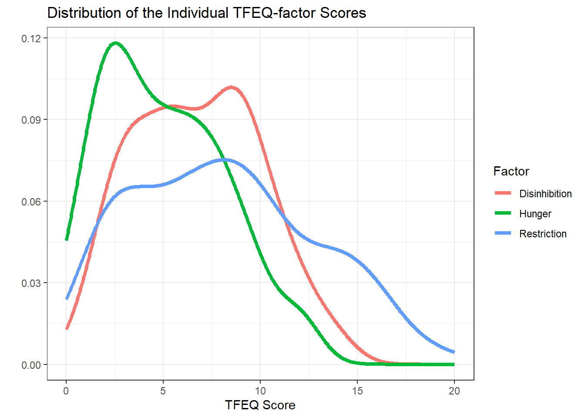
10.3 Consumer Data
The analysis of consumer data usually involves the same type of analysis as the ones for sensory data (e.g. ANOVA, PCA, etc.), but the way the data is being collected (absence of duplicates) and its underlying nature (affect vs. descriptive) require some adjustments.
Let’s start by importing the consumer data that is stored in biscuits_consumer_test.xlsx. Here, we import two sheets, one with the consumption time and number of biscuits (stored in Nbiscuit), and one with different consumer evaluations of the samples (stored in consumer)
file_path <- here("Data", "biscuits_consumer_test.xlsx")
Nbiscuit <- read_xlsx(file_path, sheet = "Time Consumption") %>%
mutate(Product = str_c("P", Product)) %>%
rename(N = `Nb biscuits`)
consumer <- read_xlsx(file_path, sheet = "Biscuits") %>%
rename(Judge = Consumer, Product = Samples) %>%
mutate(Judge = str_c("J", Judge), Product = str_c("P", Product)) %>%
inner_join(Nbiscuit, by = c("Judge", "Product"))Similarly to the sensory data, let’s start with computing the mean liking score per product after the first bite (1stbite_liking) and at the end of the evaluation (after_liking).
consumer %>%
dplyr::select(Judge, Product, `1stbite_liking`, `after_liking`) %>%
group_by(Product) %>%
summarise(across(where(is.numeric), mean))## # A tibble: 10 × 3
## Product `1stbite_liking` after_liking
## <chr> <dbl> <dbl>
## 1 P1 6.30 6.26
## 2 P10 7.40 7.57
## 3 P2 5.53 5.38
## 4 P3 3.94 3.49
## 5 P4 3.00 2.72
## 6 P5 5.78 5.73
## 7 P6 4.25 4.19
## 8 P7 4.87 4.71
## 9 P8 2.99 2.83
## 10 P9 3.51 3.18A first glance at the table shows that there are clear differences between the samples (within a liking variable), but little difference between liking variables (within a sample).
Of course, we want to know if differences between samples are significant. We thus need to perform an 2-way ANOVA (testing for the product effect by also taking into account the individual differences) followed up by a paired comparison test (here Tukey’s HSD). For the latter, the {agricolae} package is a good solution, as it is simple to use and has all its built-in tests working in the same way.
library(agricolae)
liking_start <- lm(`1stbite_liking` ~ Product + Judge, data = consumer)
liking_start_hsd <- HSD.test(liking_start, "Product")$groups %>%
as_tibble(rownames = "Product")
liking_start_hsd## # A tibble: 10 × 3
## Product `1stbite_liking` groups
## <chr> <dbl> <chr>
## 1 P10 7.40 a
## 2 P1 6.30 b
## 3 P5 5.78 b
## 4 P2 5.53 bc
## 5 P7 4.87 cd
## 6 P6 4.25 de
## 7 P3 3.94 e
## 8 P9 3.51 ef
## 9 P4 3.00 f
## 10 P8 2.99 fliking_end <- lm(`after_liking` ~ Product + Judge, data = consumer)
liking_end_hsd <- HSD.test(liking_end, "Product")$groups %>%
as_tibble(rownames = "Product")Both at the start and at the end of the evaluation, significant differences (at 5%) in liking between samples are observed according to Tukey’s HSD test.
To further compare the liking assessment of the samples after the first bite and at the end of the tasting, the results obtained from liking_start_hsd and liking_end_hsd are combined. We then represent the results in a bar-chart:
list(
Start = liking_start_hsd %>% rename(Liking = `1stbite_liking`),
End = liking_end_hsd %>% rename(Liking = `after_liking`)
) %>%
enframe(name = "Moment", value = "res") %>%
unnest(res) %>%
mutate(Moment = factor(Moment, levels = c("Start", "End"))) %>%
ggplot(aes(x = reorder(Product, -Liking), y = Liking, fill = Moment)) +
geom_bar(stat = "identity", position = "dodge") +
xlab("") +
ggtitle("Comparison of the liking scores at the start and at the end of the evaluation") +
theme_bw()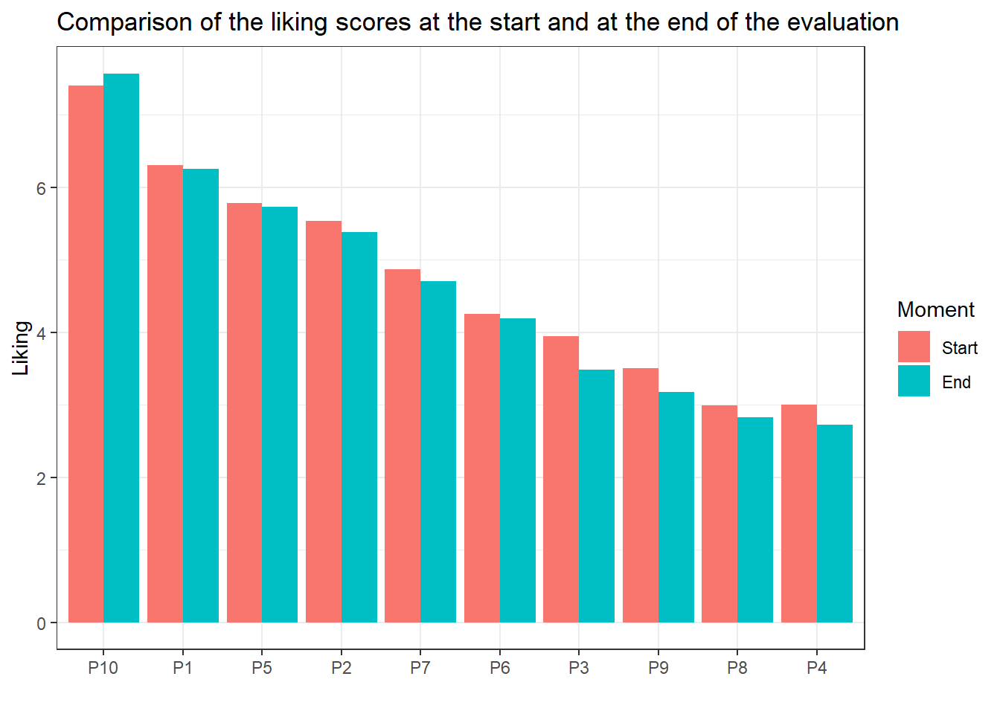
As can be seen, the pattern of liking scores across samples is indeed very stable across the evaluation, particularly in terms of rank. At the individual level, such linear relationship is also observed (here for the first 12 consumers):
consumer %>%
dplyr::select(Judge, Product, Start = `1stbite_liking`, End = `after_liking`) %>%
filter(Judge %in% str_c("J", 1:12)) %>%
mutate(Judge = factor(Judge, levels = unique(str_sort(.$Judge, numeric = TRUE)))) %>%
ggplot(aes(x = Start, y = End)) +
geom_point(pch = 20, cex = 2) +
geom_smooth(method = "lm", formula = "y~x", se = FALSE) +
theme_bw() +
ggtitle("Overall Liking", "(Assessment after first bite vs. end of the tasting)") +
facet_wrap(~Judge)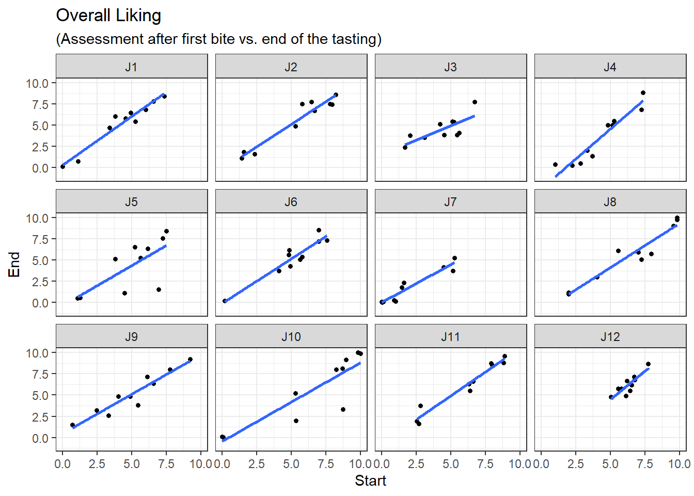
For your own curiosity, we invite you to re-create the same graph by comparing the Liking score at the end of the evaluation (
after_liking) with the liking score measured on the 9pt categorical scale (end_liking 9pt), and to reflect on the results obtained. Are the consumers consistent in their evaluations?
Another interesting relationship to study involves the liking scores47 and the number of cookies eaten by each consumer. We could follow the same procedure as before, but prefer to add here a filter to only show consumers with a significant regression line at 5%.
Let’s start by creating a function called run_reg() that runs the regression analysis of the number of biscuits (N) in function of the liking score (Liking):
run_reg <- function(df) {
output <- lm(N ~ Liking, data = df)
return(output)
}After transforming the data, we apply this function to each consumer separately.
Here, we take advantage of the flexibility of tibbles as it allows storing results as list by saving three sorts of outputs per consumer:
datacontains the individual data;lm_objcorresponds to the results of the linear model (obtained with `run_reg()``);glancecontains some general results of the model incl. R2, the p-value, etc.
These three outputs contain completely different information for the same analysis (here regressions). The fact that tibbles allow storing outputs as list is very handy since all the results are tidied in one unique R object, which can then easily be accessed by unfolding the output needed.
N_liking_reg <- consumer %>%
dplyr::select(Judge, Product, Liking = `end_liking 9pt`, N) %>%
mutate(Liking = 10 - Liking) %>%
group_by(Judge) %>%
nest() %>%
ungroup() %>%
mutate(lm_obj = map(data, run_reg)) %>%
mutate(glance = map(lm_obj, broom::glance))Since we only want to represent consumers with a significant regression line, we unfold the results stored in glance so that we can access the p.value of each regression.
N_liking <- N_liking_reg %>%
unnest(glance) %>%
filter(p.value <= 0.05) %>%
arrange(p.value) %>%
mutate(Judge = fct_reorder(Judge, p.value)) %>%
unnest(data)Ultimately, the relationship between the liking score and the number of biscuits eaten is represented in a line chart:
ggplot(N_liking, aes(x = Liking, y = N)) +
geom_point(pch = 20, cex = 2) +
geom_smooth(method = "lm", formula = "y~x", se = FALSE) +
theme_bw() +
ggtitle("Number of Biscuits vs. Liking", "(Consumers with a significant (5%) regression model are shown (ordered from the most to the least signif.)") +
facet_wrap(~Judge, scales = "free_y")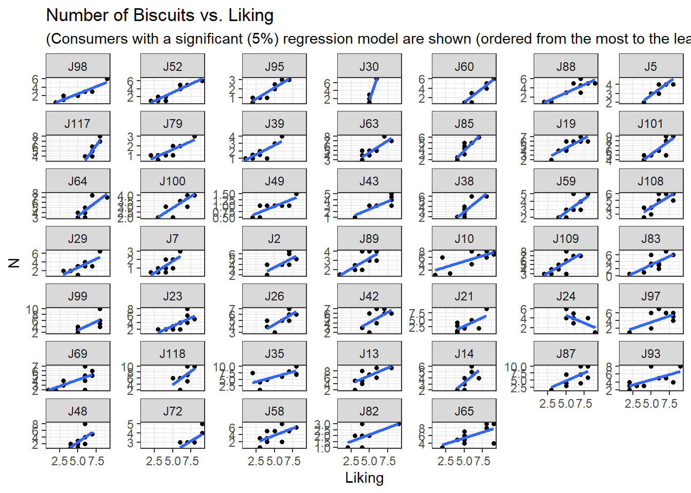
10.4 Combining Sensory and Consumer Data
10.4.1 Internal Preference Mapping
Now we’ve analyzed the sensory and the consumer data separately, it is time to combine both data sets and analyze them conjointly. A first analysis that can then be performed is the internal preference mapping, i.e. a PCA on the consumer liking scores in which the sensory attributes are projected as supplementary.
Such analysis is split in 3 steps:
- The consumer data is re-organized in a wide format with the samples in rows and the consumers in columns;
- The sensory mean table is joined to the consumer data (make sure that the product names perfectly match in the two files);
- A PCA is performed on the consumer data, the sensory descriptors being projected as supplementary variables.
consumer_wide <- consumer %>%
separate(Product, into = c("P", "Number"), sep = 1) %>%
mutate(Number = ifelse(nchar(Number) == 1, str_c("0", Number), Number)) %>%
unite(Product, P, Number, sep = "") %>%
dplyr::select(Judge, Product, Liking = `end_liking 9pt`) %>%
mutate(Liking = 10 - Liking) %>%
pivot_wider(names_from = Judge, values_from = Liking)
data_mdpref <- senso_mean %>%
inner_join(consumer_wide, by = "Product")
res_mdpref <- data_mdpref %>%
as.data.frame() %>%
column_to_rownames(var = "Product") %>%
PCA(., quali.sup = 1:2, quanti.sup = 3:34, graph = FALSE)
fviz_pca_ind(res_mdpref, habillage = 1)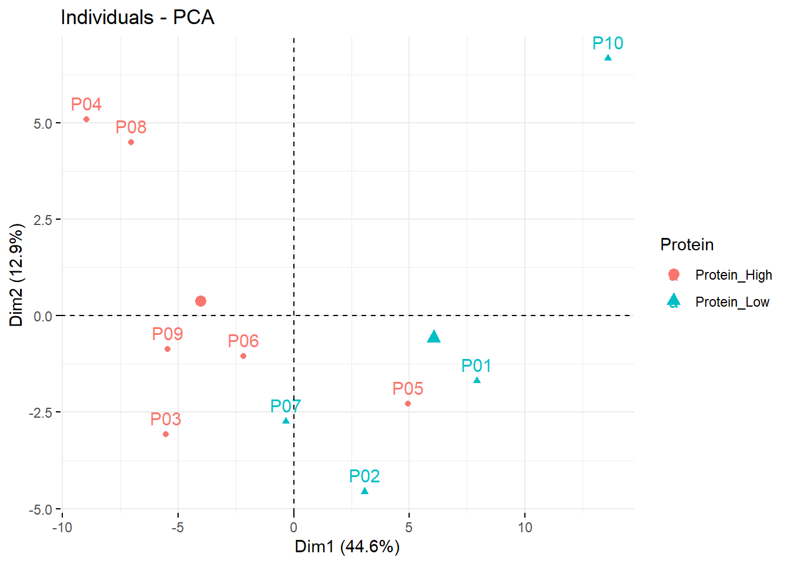
fviz_pca_var(res_mdpref, label = "quanti.sup", select.var = list(cos2 = 0.5), repel = TRUE)## Warning: ggrepel: 3 unlabeled data points (too many
## overlaps). Consider increasing max.overlaps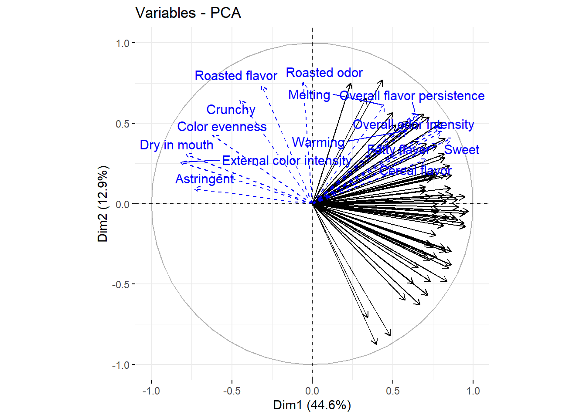
As can be seen, the consumers are quite in agreement as all the black arrows are pointing in a similar direction. In overall, they seem to like biscuits that are sweet, with cereal flavor, and fatty/dairy flavor and odor, and dislike biscuits defined as astringent, dry in mouth, uneven and with dark external color.
10.4.2 Consumers Clustering
Although the data show a fairly good agreement between consumers, let’s cluster them in more homogeneous groups based on liking.
Various solutions for clustering exist, depending on the type of distance (similarity or dissimilarity), the linkage (single, average, Ward, etc.), and of course the algorithm itself (e.g. AHC, k-means, etc.).
Here, we opt for the Agglomerative Hierarchical Clustering (AHC) with Euclidean distance (dissimilarity) and Ward criterion, as it is a fairly common approach in Sensory and Consumer research. Such analysis can be done using stats::hclust() or cluster::agnes().
Before computing the distance between consumers, it is advised to at least center their liking scores (subtracting their mean liking scores to each of their individual scores) as it allows grouping consumers based on their respective preferences, rather than on their scale usage (otherwise, consumers who scored high on all samples are grouped together, and separated from consumers who scored low on all samples, which isn’t so much informative). Such transformation can be done automatically using the
scale()48 function.
Let’s start with computing the euclidean distance between each pair of consumers by using the dist() function.
consumer_dist <- consumer_wide %>%
as.data.frame() %>%
column_to_rownames(var = "Product") %>%
scale(., center = TRUE, scale = FALSE) %>%
t(.) %>%
dist(., method = "euclidean")The AHC is performed using the hclust() function and the method = "ward.D2" parameter, which is the equivalent to method = "ward" for agnes(). To visualize the dendrogram, the factoextra::fviz_dend() function is used (here we propose to visualize the 2-clusters solution by setting k=2):
res_hclust <- hclust(consumer_dist, method = "ward.D2")
fviz_dend(res_hclust, k = 2)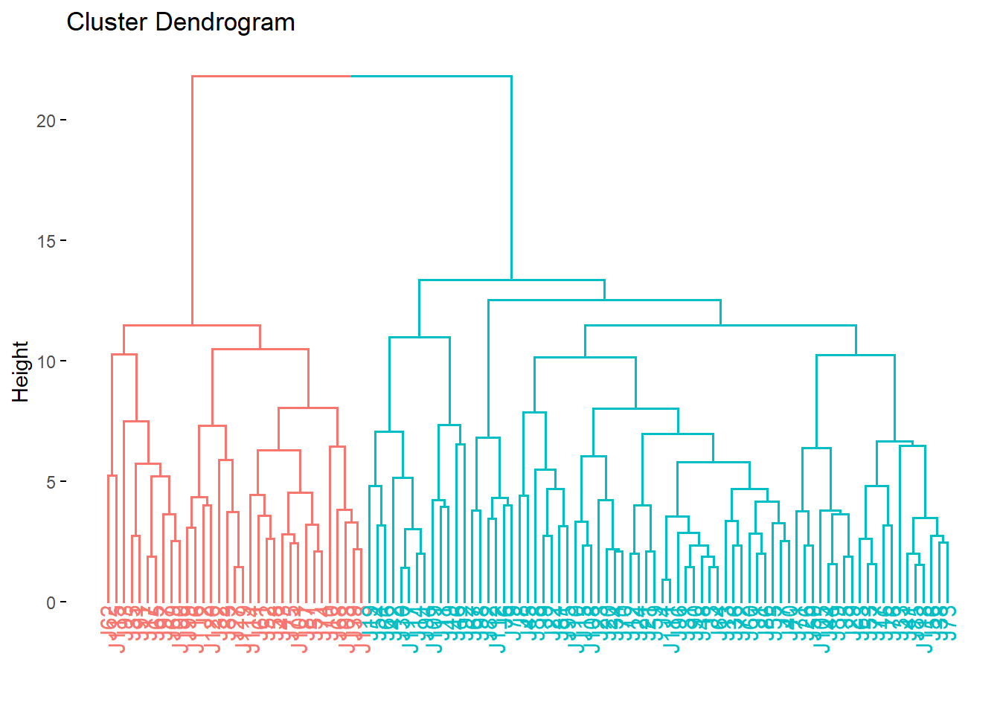
An interesting option to visualize clusters and proposed by
fviz_dend()is the phologenic representation (type="phylogenic"). We invite you to give it a try to see how it represents the clusters as an alternative to the classical dendrogram tree.
Since we are satisfied with the 2 clusters solution, we cut the tree (using cutree()) at this level using, hence generating a group of 74 and a group of 33 consumers.
res_clust <- cutree(res_hclust, k = 2) %>%
as_tibble(rownames = "Judge") %>%
rename(Cluster = value) %>%
mutate(Cluster = as.character(Cluster))
res_clust %>%
count(Cluster)## # A tibble: 2 × 2
## Cluster n
## <chr> <int>
## 1 1 74
## 2 2 33Lastly, we compare visually the preference patterns between clusters by representing in a line chart the average liking score for each product provided by each cluster.
mean_cluster <- consumer %>%
separate(Product, into = c("P", "Number"), sep = 1) %>%
mutate(Number = ifelse(nchar(Number) == 1, str_c("0", Number), Number)) %>%
unite(Product, P, Number, sep = "") %>%
dplyr::select(Judge, Product, Liking = `end_liking 9pt`) %>%
mutate(Liking = 10 - Liking) %>%
full_join(res_clust, by = "Judge") %>%
group_by(Product, Cluster) %>%
summarize(Liking = mean(Liking), N = n()) %>%
mutate(Cluster = str_c(Cluster, " (", N, ")")) %>%
ungroup()## `summarise()` has grouped output by 'Product'. You can
## override using the `.groups` argument.ggplot(mean_cluster, aes(x = Product, y = Liking, colour = Cluster, group = Cluster)) +
geom_point(pch = 20) +
geom_line(aes(group = Cluster), lwd = 2) +
xlab("") +
scale_y_continuous(name = "Average Liking Score", limits = c(1, 9), breaks = seq(1, 9, 1)) +
ggtitle("Cluster differences in the appreciation of the Products (using hclust)") +
theme_bw()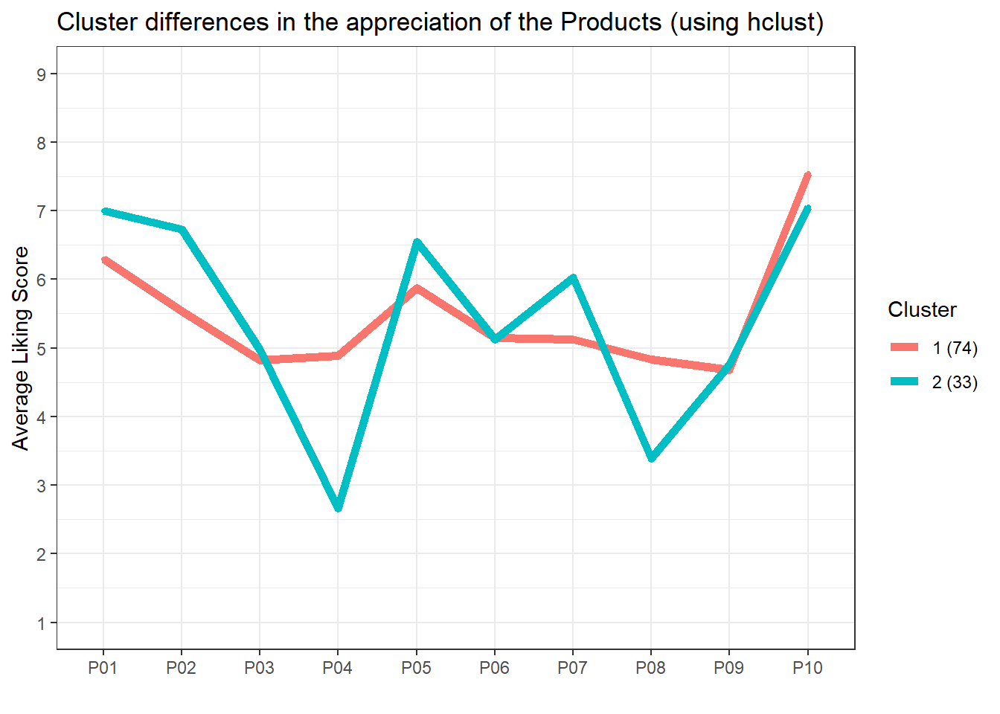
It appears that cluster 1 (74 consumers) particularly likes P10, P01, and P05, and has a fairly flat liking pattern otherwise. On the other hand, the cluster 2 (33 consumers) expressed strong rejections towards P04 and P08, and like P10 and P01 the most.
The fact that both clusters agree on the best samples (P10 and P01) goes with our original assumption from the Internal Preference Mapping that the panel of consumers is fairly homogeneous in terms of preferences.
In
{FactoMineR}, theHCPC()function also performs AHC but takes as starting point the results of a multivariate analysis (HCPC stands for Hierarchical Clustering on Principal Components). This would typically be the results of the PCA performed on the Consumer (rows) x Product (columns) matrix of liking scores, in which the scores are (at least) centered in row. Although results should be identical in most cases, it can happen that results slightly diverge fromagnes()andhclust()as it also depends on the number of dimensions kept in the multivariate analysis and on the treatment of in-between clusters consumers. But more interestingly,HCPC()offers the possibility to consolidate the clusters by performing k-means on the solution obtained from the AHC (consol=TRUE).
10.4.3 Drivers of Liking
When combining sensory and consumer data collected on the same product, it is also relevant to understand which sensory properties of the products drive the consumers’ liking and disliking. Such evaluation can be done at the panel level, at a group level (e.g. clusters, users vs. non-users, gender, etc.), or even at the individual level. Unless stated otherwise, the computations will be done for cluster 1, but could easily be adapted to other groups if needed.
10.4.3.1 Correlation
Let’s start by evaluating the simplest relationship between the sensory attributes and overall liking by looking at correlations. Here, we are combining the average liking score per cluster to the sensory profile of the products. The correlations are then computed using the cor() function:
data_cor <- mean_cluster %>%
dplyr::select(-N) %>%
pivot_wider(names_from = Cluster, values_from = Liking) %>%
inner_join(senso_mean %>% dplyr::select(-c(Protein, Fiber)), by = "Product") %>%
as.data.frame() %>%
column_to_rownames(var = "Product")
res_cor <- cor(data_cor)Various packages can be used to visualize these correlations. We opt here for ggcorrplot() from the {ggcorrplot} package as it provides many interesting visualization in {ggplot2}. This package also provides the function cor_pmat() which compute the p-value associated to each correlation. This matrix of p-value can be used to hide correlations that are not significant at the level defined by the parameter sig.level.
library(ggcorrplot)
res_cor_pmat <- cor_pmat(data_cor)
ggcorrplot(res_cor, type = "full", p.mat = res_cor_pmat, sig.level = 0.05, insig = "blank", lab = TRUE, lab_size = 2)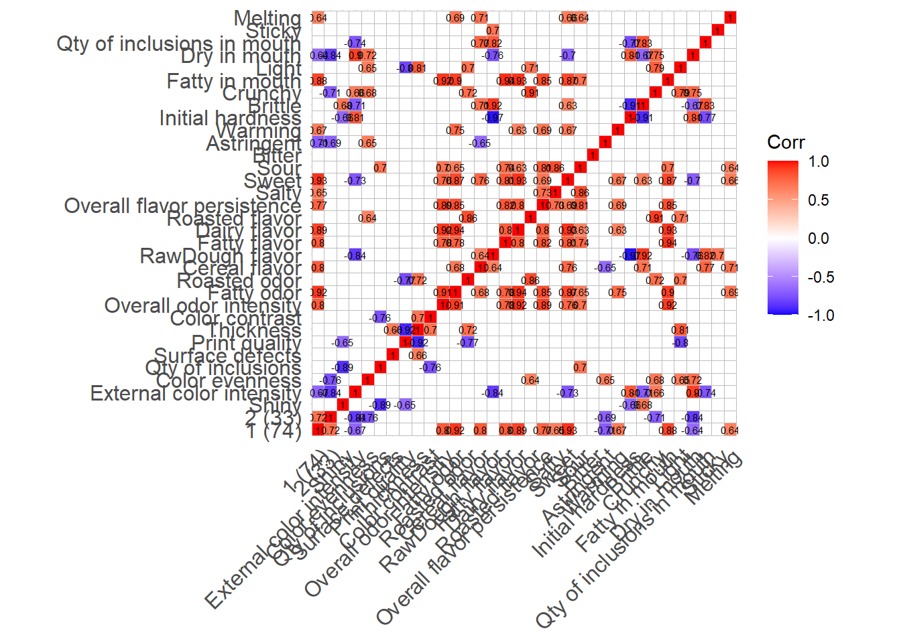
The average liking scores for cluster 1 (defined as 1 (74)) are positively correlated with Overall odor intensity, Fatty odor, Cereal flavor, Fatty flavor, Dairy flavor, Overall flavor persistence, Salty, Sweet, Warming, Fatty in mouth, and Melting. They are also negatively correlated to External color intensity, Astringent, and Dry in mouth.
Finally, it can be noted that the correlation between clusters is high with a value of 0.72.
10.4.3.2 Linear and Quadratic Regression
Although the correlation provides a first good idea of which attributes are linked to liking, it only measures linear relationships and it does not allow for inference. To overcome this particular limitations, linear and quadratic regressions are used.
Let’s start by combining the sensory data to the average liking score per product for cluster 1. To simplify the analysis, all the sensory attributes are structured in the longer format.
data_reg <- mean_cluster %>%
filter(Cluster == "1 (74)") %>%
dplyr::select(-N) %>%
inner_join(senso_mean %>% dplyr::select(-c(Protein, Fiber)), by = "Product") %>%
pivot_longer(Shiny:Melting, names_to = "Attribute", values_to = "Score") %>%
mutate(Attribute = factor(Attribute, levels = colnames(senso_mean)[4:ncol(senso_mean)]))Both the linear regression and the quadratic regression are then run on Liking per attribute:
To add a quadratic model, two options are possible: 1. In
data_reg, we could add a column (usingmutate()) calledScore2that is defined asScore2 = Score^2. The model for the quadratic regression is then defined asLiking ~ Score + Score2; 2. The quadratic model is informed directly using thepoly()function by informing which polynomial degrees to consider (here2). For its concision, we opt for the second option.
res_reg <- data_reg %>%
nest_by(Attribute) %>%
mutate(
lin_mod = list(lm(Liking ~ Score, data = data)),
quad_mod = list(lm(Liking ~ poly(Score, 2), data = data))
)We extract the attributes that are significantly linked to liking (at 5%, and we accept 6% for quadratic effects). To do so, the results stored in lin_mod and quad_mod need unfolding (summarize()) and restructuring (broom::tidy()).
lin <- res_reg %>%
summarise(broom::tidy(lin_mod)) %>%
ungroup() %>%
filter(term == "Score", p.value <= 0.05) %>%
pull(Attribute) %>%
as.character()
quad <- res_reg %>%
summarise(broom::tidy(quad_mod)) %>%
ungroup() %>%
filter(term == "poly(Score, 2)2", p.value <= 0.06) %>%
pull(Attribute) %>%
as.character()These attributes are then represented graphically against the liking Scores.
library(ggrepel)
df <- data_reg %>%
filter(Attribute %in% unique(c(lin, quad)))
p <- ggplot(df, aes(x = Score, y = Liking, label = Product)) +
geom_point(pch = 20, cex = 2) +
geom_text_repel() +
theme_bw() +
facet_wrap(~Attribute, scales = "free_x")Let’s now add a regression line to the model. To do so, geom_smooth() is being used with as method = lm combined to formula = 'y ~ x' for linear relationships, and formula = 'y ~ x + I(x^2)' for quadratic relationships (when both the linear and quadratic models are significant, the quadratic model is used).
lm.mod <- function(df, quad) {
ifelse(df$Attribute %in% quad, "y~x+I(x^2)", "y~x")
}We apply this function to our data by applying to each attribute (here we set se=FALSE to remove the confidence intervals around the regression line):
p_smooth <- by(
df, df$Attribute,
function(x) geom_smooth(data = x, method = lm, formula = lm.mod(x, quad = quad), se = FALSE)
)
p + p_smooth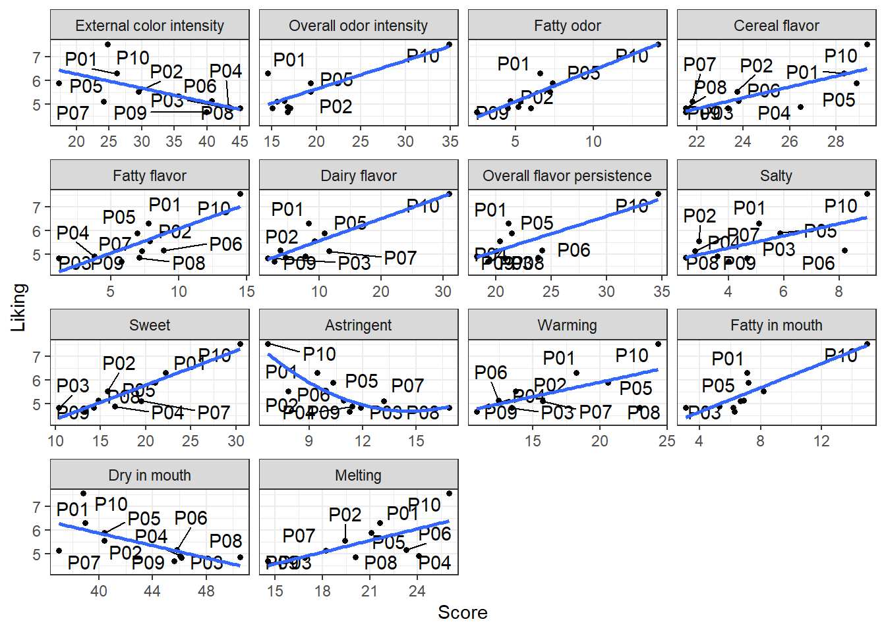
All attributes except Astringent are linearly linked to liking. For Astringent, the curvature is U-shaped: this does not show an effect of saturation as it would have been represented as an inverted U-shape. Although the quadratic effect shows a better fit than the linear effect, having a linear effect would have been a good predictor as well in this situation.
10.4.4 External Preference Mapping
Ultimately, one of the goals of combining sensory and consumer data is to find within the sensory space the area that are liked/accepted by consumers. Since this approach is based on modeling and prediction, it may suggest area of the space with high acceptance potential which are not filled in by products yet. This would open doors to new product development.
To perform such analysis, the External Preference Mapping (PrefMap) could be used amongst other techniques. For more information on the principles of PrefMap, please refer to (ANALYZING SENSORY DATA WITH R or OTHER REFERENCES…).
To run the PrefMap analysis, the carto() function from {SensoMineR} is being used. This function takes as parameter the sensory space to consider (stored in senso_pca$ind$coord, here we will consider dimension 1 and dimension 2), the table of liking scores (as stored in consumer_wider), and the model to consider (here we consider the quadratic model, so we use regmod=1). For convenience, we run the analysis on the full panel since consumer_wider is (almost) already structured as needed.
Since carto() requires matrix or data frame with row names for the analysis, the data needs to be slightly adapted (we also need to ensure that the products are in the same order in both files).
senso <- senso_pca$ind$coord[, 1:2] %>%
as_tibble(rownames = "Product") %>%
arrange(Product) %>%
as.data.frame() %>%
column_to_rownames(var = "Product")
consu <- consumer_wide %>%
arrange(Product) %>%
as.data.frame() %>%
column_to_rownames(var = "Product")
library(SensoMineR)
PrefMap <- carto(Mat = senso, MatH = consu, regmod = 1, graph.tree = FALSE, graph.corr = FALSE, graph.carto = TRUE)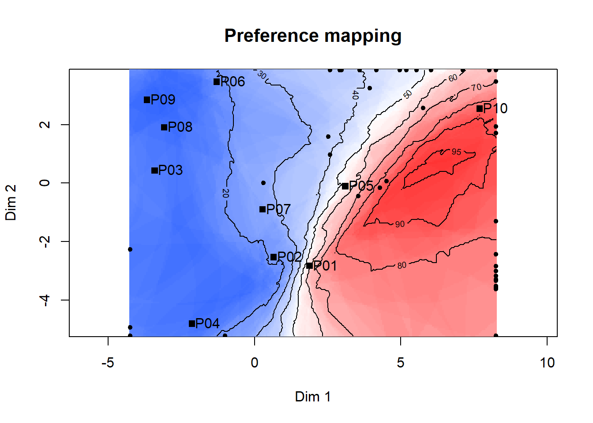
From this map, we can see that the optimal area (dark red) is located on the positive side of dimension 1, between P01, P05, and P10 (as expected by the liking score).
Let’s now re-build this plot using {ggplot2}.
The sensory space is stored in senso, whereas the surface response plot information is split between:
PrefMap$f1: contains the coordinates on dimension 1 in which predictions have be made;PrefMap$f2: contains the coordinates on dimension 2 in which predictions have be made;PrefMap$depasse: contains the percentage of consumers that accept a product at each point of the space. This matrix is defined in such a way thatPrefMap$f1links to the rows of the matrix, andPrefMap$f2links to the columns.
Last but not least, POpt (which coordinates are stored in senso_pca$ind.sup$coord) can be projected on that space in order to see how this optimized sample is considered in terms of consumers’ liking/preference.
Let’s start with preparing the data by transforming everything back into a tibble:
senso <- senso %>%
as_tibble(rownames = "Product")
senso_sup <- senso_pca$ind.sup$coord %>%
as_tibble(rownames = "Product")
dimnames(PrefMap$nb.depasse) <- list(round(PrefMap$f1, 2), round(PrefMap$f2, 2))
PrefMap_plot <- PrefMap$nb.depasse %>%
as_tibble(rownames = "Dim1") %>%
pivot_longer(-Dim1, names_to = "Dim2", values_to = "Acceptance (%)") %>%
mutate(across(where(is.character), as.numeric))To build the plot, different layers involving different source of data (senso, senso_sup, and PrefMap_plot that is) are required. Hence, the initiation of the plot through ggplot() does not specify any data. Instead, the data used in each step are included within the geom_*() of interest. In this example, geom_tile() (coloring) and geom_contour() (contour lines) are used to build the surface plot.
ggplot() +
geom_tile(data = PrefMap_plot, aes(x = Dim1, y = Dim2, fill = `Acceptance (%)`, color = `Acceptance (%)`)) +
geom_contour(data = PrefMap_plot, aes(x = Dim1, y = Dim2, z = `Acceptance (%)`), breaks = seq(0, 100, 10)) +
geom_hline(yintercept = 0, lty = 2) +
geom_vline(xintercept = 0, lty = 2) +
geom_point(data = senso, aes(x = Dim.1, y = Dim.2), pch = 20, cex = 3) +
geom_text_repel(data = senso, aes(x = Dim.1, y = Dim.2, label = Product)) +
geom_point(data = senso_sup, aes(x = Dim.1, y = Dim.2), pch = 20, col = "white", cex = 3) +
geom_text_repel(data = senso_sup, aes(x = Dim.1, y = Dim.2, label = Product), col = "white") +
scale_fill_gradient2(low = "blue", mid = "white", high = "red", midpoint = 50) +
scale_color_gradient2(low = "blue", mid = "white", high = "red", midpoint = 50) +
xlab(str_c("Dimension 1(", round(senso_pca$eig[1, 2], 1), "%)")) +
ylab(str_c("Dimension 2(", round(senso_pca$eig[2, 2], 1), "%)")) +
ggtitle("External Preference Mapping applied to the biscuits data", "(The PrefMap is based on the quadratic model)") +
theme_bw()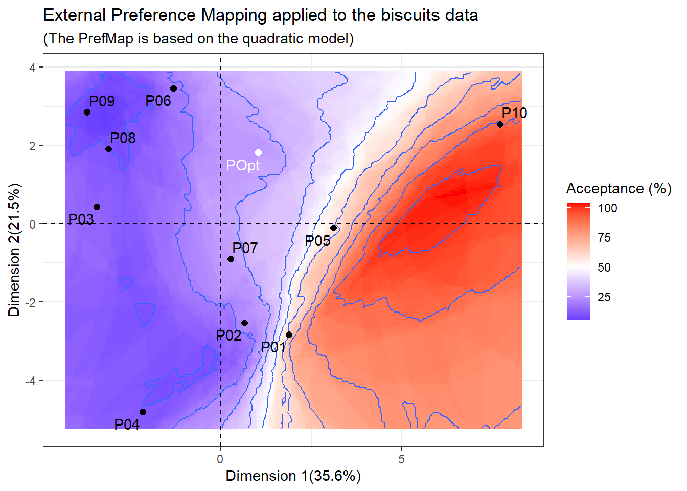
As can be seen, POpt is quite far from the optimal area suggested by the PrefMap. This suggests that prototypes with higher success chances could be developed.
References
The
map()function applies the same function to each element of a list automatically: It is hence equivalent to afor ()loop, but in a neater and more efficient way.↩︎We use the package
{formattable}to print the results in percentage using one decimal. As an alternative, we could have usedpercent()from the{scales}package.↩︎The function
ifelse()takes three parameters: 1. the condition to test, 2. the value or code to run if the condition is met, and 3. the value or code to run if the condition is not met.↩︎We would like to remind the reader that the liking scores measured on the categorical scale was reverted since 1 defined “I like it a lot” and 9 “I dislike it a lot”. To simplify the readability, this scale is reverted so that 1 corresponds to a low liking score, and 9 to a high liking score (in practice, we will take as value 10 - score given).↩︎
scale()allows centering (center=TRUE) and standardizing (scale=TRUE) data automatically in columns, hence generating z-scores.↩︎